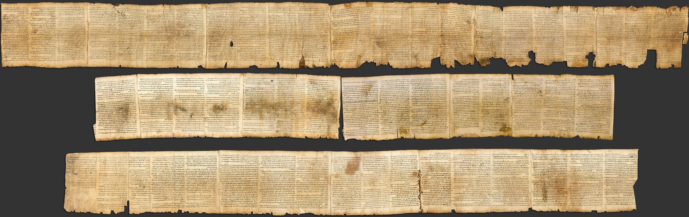

Great Isaiah Scroll

- Category
- Biblical
- Cave
- Qumran Cave 1
- Completeness
- Near-complete
- Current Location
- Israel Museum, Jerusalem (Shrine of the Book)
- Date Approx
- c. 125 BC
- Description
- One of the seven scrolls first found in Qumran Cave 1 in 1947. Written on 17 sheets of stitched parchment, about 734 cm (24 feet) long, in 54 columns. It contains the whole Book of Isaiah in the order familiar from modern Bibles, apart from a few small damaged portions. Palaeography places the handwriting at about 150-125 BC (Tov); radiocarbon results also fall before the time of Jesus, and c. 125 BC is the round figure usually given.
- Language
- Hebrew
- Location
- Qumran, Judaean Desert
- Manuscript
- Great Isaiah Scroll
- Manuscript ID
- 1QIsaa
- Material
- Parchment
- Period
- Hasmonean
- Preserved Passages
- Related Books
- Related Finds
- Significance
- The only Qumran biblical scroll preserved almost in its entirety, and the oldest known complete copy of Isaiah, roughly 1,000 years older than the medieval Masoretic manuscripts known before 1947. It agrees overwhelmingly with the Masoretic Text: the differences, numbering in the thousands, are mostly spelling and grammar, with only a small number affecting the sense of a line. It therefore shows both careful transmission over a millennium and that ancient copying was done by human scribes.
- Work
- Isaiah
Verified Checked against the sources listed below. Its core claims — identification, dates, and cited passages — were matched to a scholarly or primary source. About verification
Sources: https://en.wikipedia.org/wiki/Isaiah_Scroll
https://jewishwebsite.com/jewish-world/ancient-words-unrolled-israel-museum-displays-great-isaiah-scroll-jns-org/110629/
http://www.emanueltov.info/docs/papers/05.isaiah.2008.pdf?v=1.0
https://jewishwebsite.com/jewish-world/ancient-words-unrolled-israel-museum-displays-great-isaiah-scroll-jns-org/110629/
http://www.emanueltov.info/docs/papers/05.isaiah.2008.pdf?v=1.0
Last reviewed: 2026-10-27